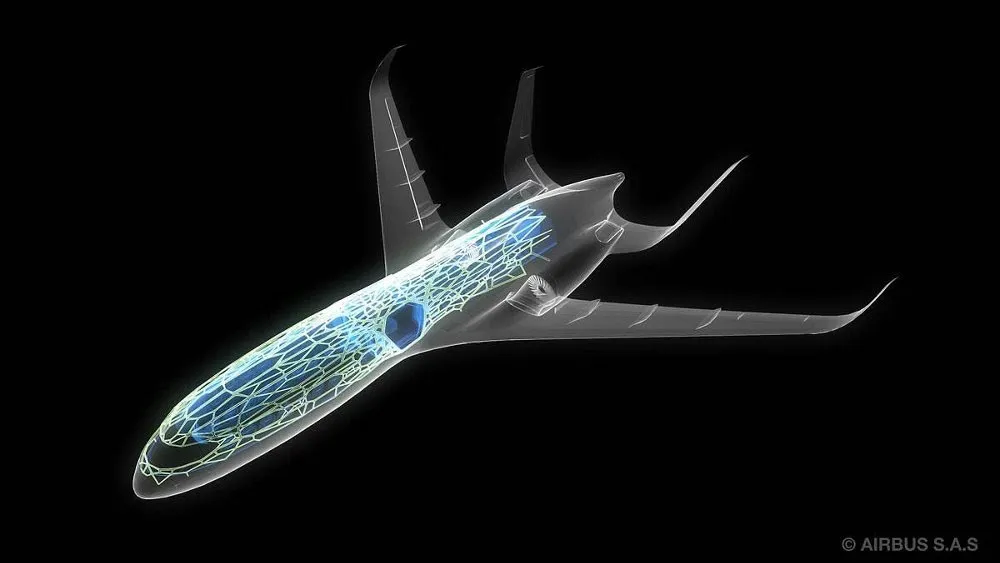

A computação quântica é uma forma fundamentalmente diferente de computação. Utilizando princípios da mecânica quântica, busca vantagens em relação aos computadores clássicos. Porém, apesar de avanços recentes, a tecnologia quântica precisa ainda superar alguns desafios. Estamos no começo de uma fase chamada de Noisy Intermediate-Scale Quantum (NISQ). Isso significa que são computadores quânticos ainda com ruídos, o que aumenta a taxa de erro nos cálculos executados, e de escala intermediária, e por esse motivo possíveis aplicações ainda são limitadas. A quebra de criptografia, por exemplo, ainda não é possível no momento. Contudo, isso não significa que esses computadores não poderão resolver problemas de forma mais eficiente que computadores tradicionais no curto prazo.
Áreas como finanças, logística, energia, empresas automobilísticas, materiais e química devem obter benefícios significativos dessa tecnologia nos próximos poucos anos. Isso é extremamente importante, pois os primeiros a adotar a computação quântica provavelmente colherão as maiores recompensas e as empresas rivais vão enfrentar barreiras de entrada mais elevadas para igualar a mesma qualidade de serviços e produtos.
Os primeiros casos de usos que devem tornar-se comercialmente valiosos nos próximos anos são relacionados a problemas de simulação, otimização e inteligência artificial. Vamos ver como isso se aplica em algumas das indústrias citadas acima:
Historicamente, novos materiais levam muito tempo a ser comercializados e exigem grandes montantes de dinheiro no seu desenvolvimento. Por exemplo, baterias de Íon-lítio foram introduzidas num jornal da ExxonMobil em 1976 e só começaram a ser comercializadas pela Sony apenas 15 anos mais tarde. Demorou mais 20 anos para que essas baterias passassem a ser utilizadas em automóveis. O mesmo se aplica a supercondutores de alta temperatura, que foram descobertos em 1986 e só recentemente começaram a ser comercializados.
Materiais e compostos químicos seguem as leis da mecânica quântica, e simular esses sistemas é uma área onde naturalmente se espera que os computadores quânticos tenham vantagem em relação aos clássicos. Empresas como Merck e Dow Chemicals esperam reduzir os gastos com pesquisa e desenvolvimento e acelerar a descoberta de novos produtos e moléculas utilizando a computação quântica. Outras empresas como a BASF já estão empregando computação quântica para acelerar a descoberta de novos polímeros. Esse tipo de aplicação terá um valor enorme em indústrias como a farmacêutica e de fertilizantes.
Além disso, empresas automobilísticas como a Daimler AG, companhia ligada ao grupo Mercedes-Benz, e Volkswagen já estão tentando utilizar computação quântica no desenvolvimento de baterias de alta performance. Esse tipo de aplicação também pode ser amplamente empregado no setor de energia renováveis que, além de depender de baterias no sistemas de armazenamento, poderá se beneficiar através de novos materiais para painéis solares.
Por último, empresas como Bosch, NASA e AIRBUS também estão interessadas no potencial da computação quântica para o desenvolvimento de novos materiais. Mas, como veremos em seguida, o potencial de resolver problemas de otimização também chamou a atenção dessas e outras empresas.
Os problemas de otimização são tipicamente difíceis, contudo extremamente importantes de serem resolvidos. Um exemplo famoso é o problema do vendedor viajante, em que busca-se a menor rota possível para passar por uma série de cidades e retornar para a cidade de origem. Como você pode imaginar, isso encontra ampla aplicação em setores como o de logística.
Espera-se que os computadores quânticos possam achar melhores aproximações e de forma mais rápida para alguns problemas que hoje são difíceis de serem resolvidos com computadores clássicos. Como citado anteriormente, empresas como NASA e AIRBUS esperam poder utilizar essa nova tecnologia para resolver problemas como Fault Tree Analysis (FTA), que busca problemas no funcionamento do sistema. Além disso, empresas de logistica e transporte, incluindo a AIRBUS, esperam otimizar rotas e planejamento de horários da suas frotas. Isso se traduziria em ganho de tempo e redução com gastos de combustíveis. A Volkswagen já fez testes bem sucedidos nesse sentido para otimizar a rota de táxis no aeroporto de Pequim.
Por fim, empresas do setor de serviços financeiros tem muito a ganhar com esse tipo de aplicação, como em problemas de otimização de portfólio, oportunidades de arbitragem ou seleção de critérios ótimos para pontuação de crédito. Em um período de tempo um pouco mais longo, soluções mais rápidas e precisas para processos que hoje dependem de métodos como o de Monte Carlo são esperadas. Por esse motivo, empresas como J.P Morgan e Goldman Sachs já começaram a investir em soluções de computação quântica. Porém, como veremos em seguida, aplicações em inteligência artificial também poderão ter grande impacto nesse mercado.
A inteligência artificial é uma tecnologia transformadora e tem tido grande impacto em diversas áreas. Por isso, é natural pensar no potencial que se poderia obter combinando-a com a tecnologia quântica. No geral, muitos dos avanços nessa área vem da aceleração de tarefas relacionadas à álgebra linear, como a solução de sistemas lineares. Isso se traduz em aplicações como tomada de decisão baseada em inteligência artificial, que vem sido explorada pelo grupo Goldman Sachs, ou métodos mais eficientes para amostragem de dados, como tem sido testado na J.P Morgan. Mas as aplicações não se limitam a serviços financeiros. A computação quântica pode vir a acelerar outras tecnologias disruptivas como carros autônomos. A BMW vem estudando a possibilidade de utilizar o poder computacional dessa tecnologia para processar a quantidade gigante de dados gerados pelos vários sensores dos carros para tornar o carro completamente autônomo. Além disso, empresas já citadas como a AIRBUS, estão vendo a possibilidade de utilizar redes neurais quânticas para entender a dinâmica de fluidos complexos.
A lista acima de empresas e casos de uso não são exaustivos. Queremos mostrar que as expectativas são altas e os impactos serão vistos em diversas áreas. Outras áreas de tecnologia quântica, como sensores quânticos e telecomunicações quânticas também vêm evoluindo a passos rápidos e irão transformar de forma radical alguns mercados. Além disso, muitos experts acreditam que a computação quântica pode sofrer um avanço precipitado que pode surgir a qualquer momento, ao invés de um progresso suave em direcção à maturidade. Por esse motivo, diversos países já estão investindo na tecnologia, como China, EUA, Inglaterra, Suíça, Holanda e outros.
O Brasil precisa se preparar caso queira participar dessa revolução. Para isso, precisamos de gente preparada e que entenda a tecnologia. As oportunidades certamente serão muitas, falta saber se iremos aproveitá-las.
Os computadores quânticos podem afetar a saúde de várias maneiras. Por exemplo, o Google anunciou recentemente que havia usado um computador quântico para simular uma reação química, um marco para a tecnologia nascente.
Embora a interação específica fosse relativamente simples – os computadores clássicos atuais também podem modelá-la –, os futuros computadores quânticos devem ser capazes de simular interações moleculares complexas com muito mais precisão do que os computadores clássicos. Na área da saúde, isso pode ajudar a acelerar os esforços de descoberta de medicamentos, facilitando a previsão dos efeitos dos candidatos a medicamentos.
Outra área em que a descoberta de medicamentos pode ser impulsionada pela computação quântica é o dobramento de proteínas. A startup ProteinQure já está explorando os computadores quânticos atuais para ajudar a prever como as proteínas se dobram no corpo. Esta é uma tarefa notoriamente difícil para computadores convencionais. Porém, a computação quântica pode resolver o problema e facilitar o design de medicamentos poderosos à base de proteínas.
Eventualmente, a computação quântica também pode levar a melhores abordagens para a medicina personalizada, permitindo análises genômicas mais rápidas para informar planos de tratamento personalizados específicos para cada paciente.
Os analistas financeiros geralmente confiam em modelos computacionais que constroem probabilidades e suposições sobre o desempenho dos mercados e portfólios.
Com a computação quântica, esses profissionais podem analisar os dados mais rapidamente, executando melhores modelos de previsão e avaliando com mais precisão as possibilidades conflitantes. Eles também podem ajudar a resolver problemas complexos de otimização relacionados a tarefas como aprimoramento de risco de portfólio e detecção de fraude.
A ameaça da computação quântica à criptografia se estende à tecnologia blockchain e às criptomoedas – incluindo Bitcoin e Ethereum – que dependem de protocolos de criptografia quântica para concluir transações.
Embora as ameaças quânticas específicas para projetos baseados em blockchain variem, as consequências potenciais nos piores cenários podem ser graves.
Por exemplo, muitos bitcoins são armazenados de tal forma que podem ser facilmente roubados por um ladrão equipado com computador quântico. Outro medo é que os computadores quânticos possam se tornar poderosos o suficiente para descriptografar e interferir nas transações antes que sejam verificados por outros participantes da rede, minando a integridade do sistema descentralizado.
E isso é apenas com relação ao Bitcoin. A tecnologia Blockchain está sendo usada cada vez mais para aplicativos de negociação de ativos, cadeias de suprimentos, gerenciamento de identidade e muitos outros processos.
Abalados pelos profundos riscos representados pelos computadores quânticos, empresas estão se movimentando para tornar a tecnologia blockchain mais segura. Redes estabelecidas como Bitcoin e Etherum estão experimentando abordagens resistentes ao quantum para futuras iterações.
Como parte desta iniciativa, um novo protocolo blockchain chamado Quantum Resistant Ledger foi configurado especificamente para combater computadores quânticos. Além disso, startups como QuSecure e Qaisec dizem que estão trabalhando em tecnologia blockchain resistente à quântica para empresas.